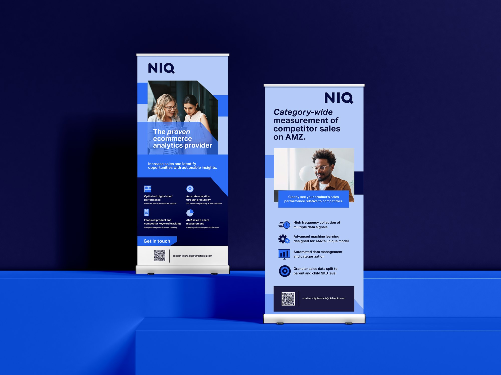
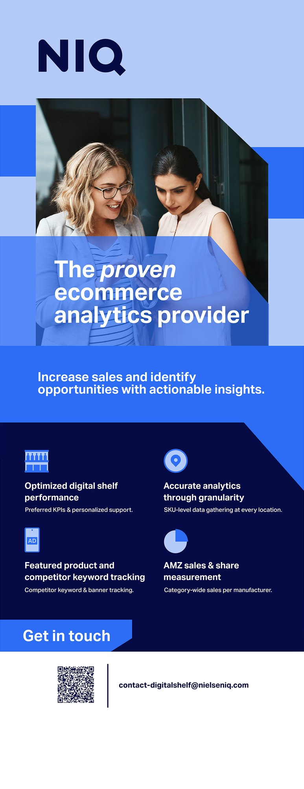
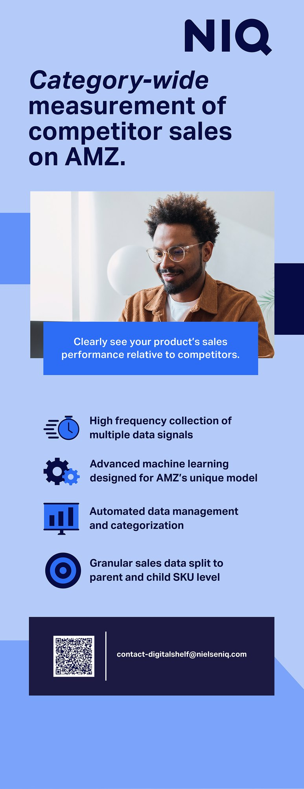

Print · Design événementiel
Roll-ups NIQ
Deux roll-ups pour les événements et rendez-vous clients de NIQ for Digital Commerce à Paris et à Londres.
- Client
- NIQ for Digital Commerce
- Année
- 2025
- Rôle
- Designer
- Outils
- Adobe Illustrator

Le brief
L'équipe avait besoin de roll-ups pour des événements à Paris et à Londres : des supports fidèles à la marque pour mettre en valeur l'expertise e-commerce de NIQ lors de rendez-vous avec des prospects.
Le roll-up 1 présente les principales offres e-commerce de NIQ, ses messages clés et son positionnement. Le roll-up 2 met l'accent sur les insights data et la valeur apportée aux clients et partenaires.
01
De haut en bas
Le sens de lecture
Chaque roll-up guide le regard vers le bas : une photo pour attirer l'attention, un titre affirmé, quelques points clés illustrés d'icônes simples, et un appel à l'action avec QR code et e-mail en bas.
J'ai réalisé les fichiers d'impression dans Adobe Illustrator et les ai transmis à l'imprimeur.


Résultats
Les roll-ups ont donné à l'équipe une image cohérente lors des événements dans les deux villes.